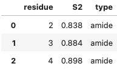

Integrative Structural Biology
Module 2B - Python Programming
External modules:
- Modules and how to import them
- Pandas
- Matplotlib
Modules
Modules
Another level of structural building block
Like functions are a collection of statements, modules are a collection of functions, statements and classes
Every .py file is a module. The name of the module is the name of the file without the .py extention.
Modules - importing
Modules define a bunch of names of variables, functions etc (called a namespace)
By importing a module, you gain access to this namespace
Importing can be done in two ways: import or from
import
import module_nameimports the module as a single object in your namespace
import random
random.randint(1,6) # all names are accessed through "random"
4from ... import
from module_name import namesfrom random import randint
randint(1,6) # the randint name has been imported into the namespace
from ... import *
from module_name import *This will import all available names into your current namespace.
from random import *
randint(1,6)
import vs from
Which should you use?
frommakes the important objects more easily availableimportkeeps the namespaces neatly separated
By using from, you risk name-clashes. Especially when using from...import *.
Therefore, from...import * is OK for testing purposes, but for real programs it is better to specify which names you want to import using from, or keep them in their own object using import.
as
Both the import and from import techniques support the as keyword
This allows you to import a module under a different name
import random as rnd
rnd.randint(1,6)
Packages
Larger libraries are sometimes organized as a "package", which is basically just directory of module files.
Importing a package:
import Bio.PDB.PDBParser
This means that somewhere on the python path, there is a directory called Bio, under which there is a directory called PDB, which containes various Python modules, one of which is called PDBParser.py. Note how . is used as directory separator.
Importing modules - Exercise
In the previous slides, we saw how to import a function. We can do the same for variables defined within a module. For instance, the math module has a variable called pi.
Try to get access to this variable in two ways:
- Import it such that it becomes available as
math.pi. - Import it such that it becomes available directly as
pi.
Importing modules - Exercise - solution
- Import it such that it becomes available as
math.pi.
import math
print(math.pi)
pi.from math import pi
print(pi)
from math import *
print(pi)
Installing external modules
On Google colab and the ERDA notebook environment, many external modules are preinstalled. But if you need to install additional modules, you can do so using pip
!pip install package-name!pip install seaborn!conda install --yes pipNumpy
numpy
Basic ideas:
- Make it easy to perform operations on a collection of numbers.
- Make it easy to work with tables (matrices) of numbers
- Much faster than writing loops in Python
In short: whenever you have a list of numbers, consider using numpy.
numpy - importing
import numpyor (very commonly used):
import numpy as npnumpy - array
The main ingredient in numpy is a new type: the numpy array.
Creating an array from a list or tuple:
a = np.array([1,2,3,4])
a = np.array((1,2,3,4))In contrast to lists, numpy arrays are primarily designed to contain elements of the same type.
You can specify a type explicitly:
a = np.array([1,2,3,4], np.float) # np.int, np.bool, ...If not specified, numpy will take a guess.
numpy - array initialization
There are various other ways to initialize numpy arrays
print(np.arange(2.0, 2.4, 0.1))output[ 2. , 2.1, 2.2, 2.3]print(np.zeros(4))output[ 0. 0. 0. 0.]print(np.ones(4))output[ 1. 1. 1. 1.]numpy - operations on arrays
The common mathematical operators are available
a = np.arange(1,4)
print(a)
print(3*a)
print(a+a)
print(a*a)
print(a/a)
print(np.cos(a))
output
[1 2 3]
[3 6 9]
[2 4 6]
[1 4 9]
[1. 1. 1.]
[ 0.54030231 -0.41614684 -0.9899925 ]Note how they automatically apply element-wise.
What would happen if we did the same with normal lists?
numpy - random arrays
You can create arrays with random numbers
print(np.random.rand(3))output
[ 0.53066947 0.03155089 0.39243265]# 5 numbers between 1 and 3 (3 not included)
print(np.random.randint(1,3,5))output
[2 1 2 2 2]numpy - multidimensional arrays
Common scenario: data set with multiple columns
Numpy is ideal for handling such data - using 2D arrays.
Initializing from a list of lists:
print(np.array([[1,2,3,4],[5,6,7,8]]))
output[[1 2 3 4]
[5 6 7 8]]
shape attribute, so you can see how many rows and columns it has
a = np.array([[1,2,3,4],[5,6,7,8]])
print(a.shape)
output
(2, 4)numpy - Exercise 1
The previous slides provides us with a compact way to simulate throwing a die 100 times: np.random.randint(1,7,100)
Let's see if we can figure out how to calculate the sum of throwing 2 dice:
- Create a one-line python statement that calculates the average of 10,000 throws of the sum of two dice.
Hint:np.average()calculates the average over an array.
numpy - Exercise 1 - solution
- Create a one-line python statement that calculates the average of 10,000 throws of the sum of two dice.
Hint:np.average()calculates the average over an array.print(np.average(np.random.randint(1,7,10000) + np.random.randint(1,7,10000)))output7.0411000000000001
Pandas
pandas - importing
import pandasor:
import pandas as pdpandas
Pandas introduces a new datatype: the dataframe
What is a dataframe?
- A wrapper around a 2D numpy array - but with labels on the rows and columns
- Think of it as a replacement for Excel sheets. Or dataframes in R. Or datasets in Sas.
pandas - Dataframe - from numpy array
A dataframe has two sets of labels
index: row labels
columns: column labels
Dataframes can be created from numpy arrays by providing labels for the index and the columns:
np_array = np.arange(6).reshape((2,3))
df = pd.DataFrame(np_array, index=['a', 'b'], columns=['col1', 'col2', 'col3'])
print(df)output col1 col2 col3
a 0 1 2
b 3 4 5 pandas - Dataframe - from dictionary of lists
You can also initialize from a dictionary of lists
dict_of_lists = {'col1': [0,3], 'col2': [1,4], 'col3': [2,5]}
df = pd.DataFrame(dict_of_lists, index=['a', 'b'])
print(df)output col1 col2 col3
a 0 1 2
b 3 4 5 If index is not specified, it will use [0,1, ...]
df = pd.DataFrame(dict_of_lists)
print(df)output col1 col2 col3
0 0 1 2
1 3 4 5 There are many more ways to initialize DataFrames...but we'll focus on reading from a file
pandas - reading/writing in various formats
Very useful: you can initialize a dataframe directly from a file!
Various formats are supported
read_table() | |
read_csv() | to_csv() |
read_html() | to_html() |
read_json() | to_json() |
read_hdf() | to_hdf() |
read_excel() | to_excel() |
read_sas() | |
read_sql() | to_sql() |
| ... |
Pandas — exercise
We will work on the same file as last week: https://wouterboomsma.github.io/isb2024/data/amide.s2_exp. Please download it - e.g. by writing the following in your notebook cell:!wget https://wouterboomsma.github.io/isb2024/data/amide.s2_exp- Look up the documentation for the
read_tablefunction in pandas (e.g. by googling "pandas read_table"), and use this function to read data from the amide.s2_exp into a pandas dataframe. Save the value in a variable calleddf. - Now print the dataframe to screen. Make sure the header makes sense (hint: take a look at the "header" option)
- Now just evaluate the dataframe (i.e. just by writing
dfin a cell and pressing shift-enter.)
Files — exercise — solution
- ...use this function to read data from the amide.s2_exp into a pandas dataframe. Save the variable in a variable called
df - Now print the dataframe to screen. Make sure the header makes sense (hint: take a look at the "header" option)
import pandas as pd
df = pd.read_table('amide.s2_exp', delimiter=' ')print(df)output
2 0.838 amide
0 3 0.884 amide
1 4 0.898 amide
.. ...Ah ok...read_table thinks the first line is a header. Instead, we do
df = pd.read_table('amide.s2_exp', delimiter=' ', header=None)
print(df) output
0 1 2
0 2 0.838 amide
1 3 0.884 amide
.. .. ... ...
Files — exercise — solution
- (continued)
We can also specify sensible headers instead:df = pd.read_table('amide.s2_exp', delimiter=' ', names=['residue', 'S2', 'type']) print(df)outputresidue S2 type 0 2 0.838 amide 1 3 0.884 amide .. ... ... ...
Note that this is the same functionality that we coded in pure python in the bonus question in the Preparation Exercise. In pandas, it just takes 1 line of code. - Now just evaluate the dataframe (i.e. just by writing
dfin a cell and pressing shift-enter.)
Moral of the story: dataframes within notebooks are displayed more clearly when evaluating them rather than printing them.
pandas - Dataframe: index, columns, values
So what can we do with our dataframe once we've read it in?
The labels and values can be accessed using .index, .columns, and .values
np_array = np.arange(6).reshape((3,2))
df = pd.DataFrame(np_array,
index=['a', 'b', 'c'],
columns=['col1', 'col2'])
print(df.index)
print(df.columns)
print(df.values)
output
Index(['a', 'b', 'c'], dtype='object')
Index(['col1', 'col2'], dtype='object')
[[0 1]
[2 3]
[4 5]] pandas - Indexing into a dataframe
More importantly, we want to be able to access values in our dataframe. How?
There are (confusingly) many ways to do this - we'll focus on one here:
| Get by label: | df.loc[row_label, col_label] |
| Get by index: | df.iloc[row_index, col_index] |
pandas - .loc: selecting by labels
The .loc attribute is the primary access method
- It selects by label!
- Ranges are allowed: all labels between and including both endpoints are included
np_array = np.arange(6).reshape((3,2))
df = pd.DataFrame(np_array, index=['a', 'b', 'c'],
columns=['col1', 'col2'])
print(df)
# note that both endpoints are included
print(df.loc['a':'b'])output
col1 col2
a 0 1
b 2 3
c 4 5
col1 col2
a 0 1
b 2 3 pandas - .loc: selecting by labels (2)
You can select along both rows and columns with .loc
np_array = np.arange(6).reshape((3,2))
df = pd.DataFrame(np_array, index=['a', 'b', 'c'],
columns=['col1', 'col2'])
print(df)
print(df.loc['a':'b', :'col1'])output
col1 col2
a 0 1
b 2 3
c 4 5
col1
a 0
b 2 pandas - Exercise 2
Continuing on the same dataset as before...
- Extract and output the second ('S2') column from our amide.s2_exp dataframe
pandas - Exercise 2 - solution
- Extract and output the first column from our amide.s2_exp dataframe
import pandas as pd df = pd.read_table('amide.s2_exp', delimiter=' ', names=['residue', 'S2', 'type']) print(df.loc[:,'S2'])
Note that we still carry around the index on the left. If we want to get rid of that, we can useoutput0 0.838 1 0.884 2 0.898 ....valuesto get the raw numpy array:
print(df.loc[:,'S2'].values)output[0.838 0.884 0.898 ... ]
Matplotlib
matplotlib
Very powerful, general purpose plotting functionality
There are thousands of things you can do with it. We'll just show a few examples here...
matplotlib - importing
The standard way to import matplotlib:
import matplotlib.pyplot as pltmatplotlib - simple plot
import matplotlib.pyplot as plt
import numpy as np
x = np.arange(0, 10, 0.1)
y = np.cos(x)
plt.plot(x,y)
plt.show()Try it out!
matplotlib - saving to a file
import matplotlib.pyplot as plt
import numpy as np
x = np.arange(0, 10, 0.1)
y = np.cos(x)
plt.plot(x,y)
plt.savefig('plot.png',
transparent=True)
Note that you can use transparent=True for transparent backgrounds.
matplotlib - multiple plots
import matplotlib.pyplot as plt
import numpy as np
x = np.arange(0, 10, 0.1)
y1 = np.cos(x)
plt.plot(x,y1)
y2 = np.sin(x)
plt.plot(x,y2)
plt.show()matplotlib - legends
import matplotlib.pyplot as plt
import numpy as np
x = np.arange(0, 10, 0.1)
y1 = np.cos(x)
plt.plot(x,y1, label='cosine')
y2 = np.sin(x)
plt.plot(x,y2, label='sine')
plt.legend()
plt.show()Note that the legend() automatically reads the labels from the individual plot commands.
matplotlib - histograms
import matplotlib.pyplot as plt
import numpy as np
x = np.random.standard_normal(10000)
plt.hist(x, bins=100)
plt.show()
matplotlib - scatter plot
import matplotlib.pyplot as plt
import numpy as np
# 2D-Gauss distribution
x = np.random.multivariate_normal(
mean=(1,2),
cov=[[1,-0.5],[-0.5,1]],
size=1000)
plt.scatter(x[:,0],x[:,1])
plt.show()
matplotlib - Exercise 1
We can now plot the S2 data from our running example.
- Extract the
'residue'column and the'S2'colomn from the dataframe, and use this to create a line plot, where the residues are the x-values and the S2 values are the y-values.
matplotlib - Exercise 1 - solution (1)
import pandas as pd
import matplotlib.pyplot as plt
df = pd.read_table('amide.s2_exp',
delimiter=' ',
names=['residue', 'S2',
'type'])
plt.plot(df.loc[:,'residue'], df.loc[:,'S2'])
plt.show()
matplotlib - Exercise 1 - solution (2)
You can actually also call this same plot functionality directly on the pandas dataframeimport pandas as pd
import matplotlib.pyplot as plt
df = pd.read_table('amide.s2_exp',
delimiter=' ',
names=['residue', 'S2',
'type'])
df.plot('residue', 'S2') # <--
plt.show()
Note that the code is now simpler - and we get axis labels for free